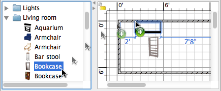

| Adding doors, windows and furniture | |||
To add doors, windows or furniture to your home, drag and drop one or more pieces of furniture from catalog to the home plan or furniture list.  You may also select some pieces in the catalog, then choose Furniture > Add to home or click on the Add to home tool.
When pieces are dropped in furniture list or added with the Furniture > Add to home menu, the
location of their top left corner is at the point (0, 0). The pieces added to home are selected and drawn simultaneously in furniture list, in the plan and in the 3D view. During the loading time of the 3D model of added pieces, these pieces are represented as a white box in the 3D view. |
|